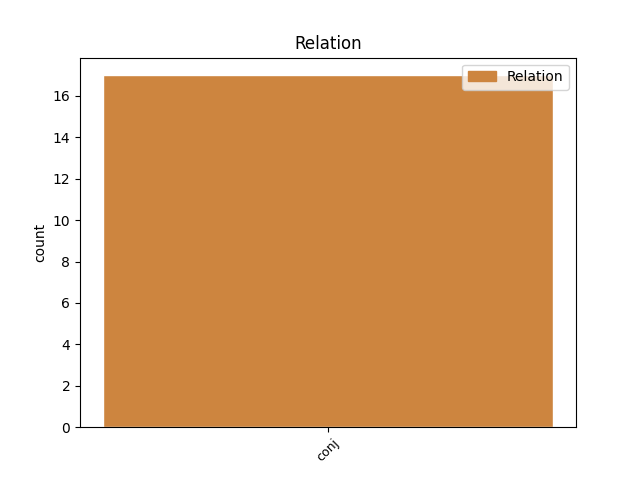
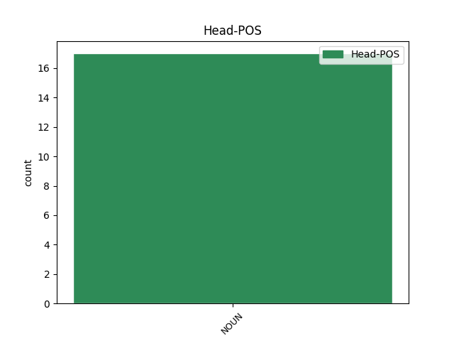
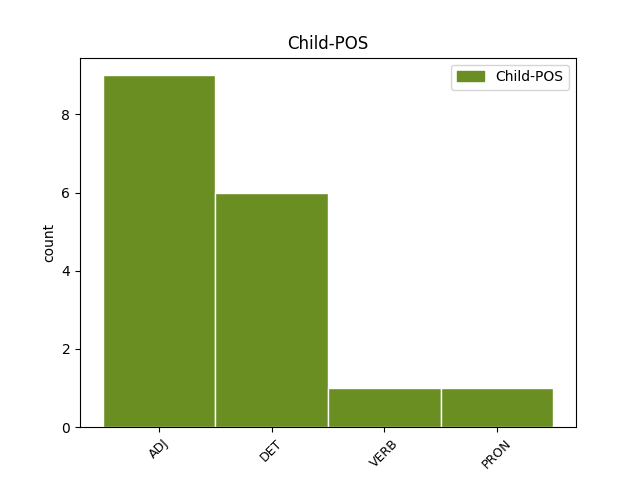

Distribution of features within this leaf



Agreement Rules sorted by frequency.
- When the dependent token is the conjunct(conj) of the head token, and the head token is NOUN and the dependent token is ADJ.
1 Na _ _ _ _ 0 _ _ _
2 poslednjim _ _ _ _ 0 _ _ _
3 izborima _ _ _ _ 0 _ _ _
4 , _ _ _ _ 0 _ _ _
5 održanim _ _ _ _ 0 _ _ _
6 u _ _ _ _ 0 _ _ _
7 julu _ _ _ _ 0 _ _ _
8 , _ _ _ _ 0 _ _ _
9 proevropske _ _ _ _ 0 _ _ _
10 stranke _ _ _ _ 0 _ _ _
11 dobile _ _ _ _ 0 _ _ _
12 su _ _ _ _ 0 _ _ _
13 većinu većina NOUN Ncfsa Case=Acc|Gender=Fem|Number=Sing 0 _ _ _
14 , _ _ _ _ 0 _ _ _
15 ali _ _ _ _ 0 _ _ _
16 nedovoljnu nedovoljan ADJ Agpfsay Case=Acc|Definite=Def|Degree=Pos|Gender=Fem|Number=Sing 13 conj _ _
17 da _ _ _ _ 0 _ _ _
18 obezbede _ _ _ _ 0 _ _ _
19 pobedu _ _ _ _ 0 _ _ _
20 svog _ _ _ _ 0 _ _ _
21 predsedničkog _ _ _ _ 0 _ _ _
22 kandidata _ _ _ _ 0 _ _ _
23 . _ _ _ _ 0 _ _ _
1 Od _ _ _ _ 0 _ _ _
2 količine _ _ _ _ 0 _ _ _
3 ovog _ _ _ _ 0 _ _ _
4 hormona _ _ _ _ 0 _ _ _
5 u _ _ _ _ 0 _ _ _
6 krvi _ _ _ _ 0 _ _ _
7 zavisiće _ _ _ _ 0 _ _ _
8 naše _ _ _ _ 0 _ _ _
9 raspoloženje raspoloženje NOUN Ncnsn Case=Nom|Gender=Neut|Number=Sing 0 _ _ _
10 i _ _ _ _ 0 _ _ _
11 to taj DET Pd-nsn Case=Nom|Gender=Neut|Number=Sing|PronType=Dem 9 conj _ _
12 kako _ _ _ _ 0 _ _ _
13 se _ _ _ _ 0 _ _ _
14 osećamo _ _ _ _ 0 _ _ _
15 . _ _ _ _ 0 _ _ _
1 Takođe _ _ _ _ 0 _ _ _
2 u _ _ _ _ 0 _ _ _
3 vestima _ _ _ _ 0 _ _ _
4 iz _ _ _ _ 0 _ _ _
5 kulture _ _ _ _ 0 _ _ _
6 : _ _ _ _ 0 _ _ _
7 Istanbul _ _ _ _ 0 _ _ _
8 domaćin domaćin NOUN Ncmsn Case=Nom|Gender=Masc|Number=Sing 0 _ _ _
9 37. _ _ _ _ 0 _ _ _
10 Međunarodnog _ _ _ _ 0 _ _ _
11 muzičkog _ _ _ _ 0 _ _ _
12 festivala _ _ _ _ 0 _ _ _
13 , _ _ _ _ 0 _ _ _
14 a _ _ _ _ 0 _ _ _
15 Kipar _ _ _ _ 0 _ _ _
16 i _ _ _ _ 0 _ _ _
17 Grčka _ _ _ _ 0 _ _ _
18 potpisali potpisati VERB Vmp-pm Gender=Masc|Number=Plur|Tense=Past|VerbForm=Part|Voice=Act 8 conj _ _
19 sporazum _ _ _ _ 0 _ _ _
20 o _ _ _ _ 0 _ _ _
21 saradnji _ _ _ _ 0 _ _ _
22 . _ _ _ _ 0 _ _ _
Disagree Examples:
1 Prema _ _ _ _ 0 _ _ _
2 podacima _ _ _ _ 0 _ _ _
3 kojima _ _ _ _ 0 _ _ _
4 raspolažemo _ _ _ _ 0 _ _ _
5 , _ _ _ _ 0 _ _ _
6 najčešće _ _ _ _ 0 _ _ _
7 su _ _ _ _ 0 _ _ _
8 žrtve _ _ _ _ 0 _ _ _
9 mobinga _ _ _ _ 0 _ _ _
10 žene žena NOUN Ncfpn Case=Nom|Gender=Fem|Number=Plur 0 _ _ _
11 , _ _ _ _ 0 _ _ _
12 zaposleni zaposlen ADJ Agpmpny Case=Nom|Definite=Def|Degree=Pos|Gender=Masc|Number=Plur 10 conj _ _
13 koji _ _ _ _ 0 _ _ _
14 su _ _ _ _ 0 _ _ _
15 na _ _ _ _ 0 _ _ _
16 početku _ _ _ _ 0 _ _ _
17 karijere _ _ _ _ 0 _ _ _
18 i _ _ _ _ 0 _ _ _
19 oni _ _ _ _ 0 _ _ _
20 koji _ _ _ _ 0 _ _ _
21 su _ _ _ _ 0 _ _ _
22 na _ _ _ _ 0 _ _ _
23 korak _ _ _ _ 0 _ _ _
24 od _ _ _ _ 0 _ _ _
25 penzije _ _ _ _ 0 _ _ _
26 " _ _ _ _ 0 _ _ _
27 , _ _ _ _ 0 _ _ _
28 kaže _ _ _ _ 0 _ _ _
29 ona _ _ _ _ 0 _ _ _
30 . _ _ _ _ 0 _ _ _
1 " _ _ _ _ 0 _ _ _
2 Sporazumi _ _ _ _ 0 _ _ _
3 omogućavaju _ _ _ _ 0 _ _ _
4 kretanje _ _ _ _ 0 _ _ _
5 samo _ _ _ _ 0 _ _ _
6 uz _ _ _ _ 0 _ _ _
7 biometrijske _ _ _ _ 0 _ _ _
8 lične _ _ _ _ 0 _ _ _
9 karte _ _ _ _ 0 _ _ _
10 , _ _ _ _ 0 _ _ _
11 što _ _ _ _ 0 _ _ _
12 znači _ _ _ _ 0 _ _ _
13 da _ _ _ _ 0 _ _ _
14 , _ _ _ _ 0 _ _ _
15 ako _ _ _ _ 0 _ _ _
16 neko _ _ _ _ 0 _ _ _
17 ima _ _ _ _ 0 _ _ _
18 staru _ _ _ _ 0 _ _ _
19 ličnu _ _ _ _ 0 _ _ _
20 kartu _ _ _ _ 0 _ _ _
21 , _ _ _ _ 0 _ _ _
22 neće _ _ _ _ 0 _ _ _
23 moći _ _ _ _ 0 _ _ _
24 da _ _ _ _ 0 _ _ _
25 pređe _ _ _ _ 0 _ _ _
26 granicu _ _ _ _ 0 _ _ _
27 , _ _ _ _ 0 _ _ _
28 pa _ _ _ _ 0 _ _ _
29 tako _ _ _ _ 0 _ _ _
30 nema _ _ _ _ 0 _ _ _
31 zabrinutosti _ _ _ _ 0 _ _ _
32 da _ _ _ _ 0 _ _ _
33 će _ _ _ _ 0 _ _ _
34 neko _ _ _ _ 0 _ _ _
35 falsifikovati _ _ _ _ 0 _ _ _
36 ličnu _ _ _ _ 0 _ _ _
37 kartu karta NOUN Ncfsa Case=Acc|Gender=Fem|Number=Sing 0 _ _ _
38 ili _ _ _ _ 0 _ _ _
39 nešto nešto PRON Pi3n-n Case=Nom|Gender=Neut|PronType=Ind 37 conj _ _
40 slično _ _ _ _ 0 _ _ _
41 tome _ _ _ _ 0 _ _ _
42 . _ _ _ _ 0 _ _ _
1 " _ _ _ _ 0 _ _ _
2 Oni _ _ _ _ 0 _ _ _
3 će _ _ _ _ 0 _ _ _
4 osuditi _ _ _ _ 0 _ _ _
5 svoj _ _ _ _ 0 _ _ _
6 narod _ _ _ _ 0 _ _ _
7 -- _ _ _ _ 0 _ _ _
8 i _ _ _ _ 0 _ _ _
9 celokupnu _ _ _ _ 0 _ _ _
10 BiH _ _ _ _ 0 _ _ _
11 -- _ _ _ _ 0 _ _ _
12 da _ _ _ _ 0 _ _ _
13 budu _ _ _ _ 0 _ _ _
14 zarobljenici _ _ _ _ 0 _ _ _
15 svoje _ _ _ _ 0 _ _ _
16 prošlosti _ _ _ _ 0 _ _ _
17 , _ _ _ _ 0 _ _ _
18 kada _ _ _ _ 0 _ _ _
19 imaju _ _ _ _ 0 _ _ _
20 šansu _ _ _ _ 0 _ _ _
21 da _ _ _ _ 0 _ _ _
22 prihvate _ _ _ _ 0 _ _ _
23 budućnost budućnost NOUN Ncfsa Case=Acc|Gender=Fem|Number=Sing 0 _ _ _
24 u _ _ _ _ 0 _ _ _
25 modernoj _ _ _ _ 0 _ _ _
26 Evropi _ _ _ _ 0 _ _ _
27 i _ _ _ _ 0 _ _ _
28 sve sve DET Pi-nsa Case=Acc|Gender=Neut|Number=Sing|PronType=Tot 23 conj _ _
29 što _ _ _ _ 0 _ _ _
30 ona _ _ _ _ 0 _ _ _
31 može _ _ _ _ 0 _ _ _
32 ponuditi _ _ _ _ 0 _ _ _
33 u _ _ _ _ 0 _ _ _
34 smislu _ _ _ _ 0 _ _ _
35 radnih _ _ _ _ 0 _ _ _
36 mesta _ _ _ _ 0 _ _ _
37 , _ _ _ _ 0 _ _ _
38 slobode _ _ _ _ 0 _ _ _
39 putovanja _ _ _ _ 0 _ _ _
40 , _ _ _ _ 0 _ _ _
41 bezbednosti _ _ _ _ 0 _ _ _
42 i _ _ _ _ 0 _ _ _
43 prosperiteta _ _ _ _ 0 _ _ _
44 " _ _ _ _ 0 _ _ _
45 , _ _ _ _ 0 _ _ _
46 naglasila _ _ _ _ 0 _ _ _
47 je _ _ _ _ 0 _ _ _
48 OHR _ _ _ _ 0 _ _ _
49 . _ _ _ _ 0 _ _ _
1 Domaćinstva domaćinstvo NOUN Ncnpn Case=Nom|Gender=Neut|Number=Plur 0 _ _ _
2 sa _ _ _ _ 0 _ _ _
3 malim _ _ _ _ 0 _ _ _
4 prihodima _ _ _ _ 0 _ _ _
5 i _ _ _ _ 0 _ _ _
6 nezaposleni nezaposlen ADJ Agpmpny Case=Nom|Definite=Def|Degree=Pos|Gender=Masc|Number=Plur 1 conj _ _
7 najteže _ _ _ _ 0 _ _ _
8 su _ _ _ _ 0 _ _ _
9 pogođeni _ _ _ _ 0 _ _ _
10 inflacijom _ _ _ _ 0 _ _ _
11 u _ _ _ _ 0 _ _ _
12 tom _ _ _ _ 0 _ _ _
13 sektoru _ _ _ _ 0 _ _ _
14 , _ _ _ _ 0 _ _ _
15 rekao _ _ _ _ 0 _ _ _
16 je _ _ _ _ 0 _ _ _
17 on _ _ _ _ 0 _ _ _
18 . _ _ _ _ 0 _ _ _
1 Ne _ _ _ _ 0 _ _ _
2 samo _ _ _ _ 0 _ _ _
3 kada _ _ _ _ 0 _ _ _
4 su _ _ _ _ 0 _ _ _
5 u _ _ _ _ 0 _ _ _
6 pitanju _ _ _ _ 0 _ _ _
7 rat _ _ _ _ 0 _ _ _
8 ( _ _ _ _ 0 _ _ _
9 1998 _ _ _ _ 0 _ _ _
10 - _ _ _ _ 0 _ _ _
11 1999 _ _ _ _ 0 _ _ _
12 ) _ _ _ _ 0 _ _ _
13 , _ _ _ _ 0 _ _ _
14 paljenje _ _ _ _ 0 _ _ _
15 i _ _ _ _ 0 _ _ _
16 destrukcija destrukcija NOUN Ncfsn Case=Nom|Gender=Fem|Number=Sing 0 _ _ _
17 , _ _ _ _ 0 _ _ _
18 nego _ _ _ _ 0 _ _ _
19 sve sve DET Pi-nsa Case=Acc|Gender=Neut|Number=Sing|PronType=Tot 16 conj _ _
20 što _ _ _ _ 0 _ _ _
21 su _ _ _ _ 0 _ _ _
22 žrtvovali _ _ _ _ 0 _ _ _
23 u _ _ _ _ 0 _ _ _
24 poslednjih _ _ _ _ 0 _ _ _
25 osam _ _ _ _ 0 _ _ _
26 godina _ _ _ _ 0 _ _ _
27 ... _ _ _ _ 0 _ _ _
28 samo _ _ _ _ 0 _ _ _
29 da _ _ _ _ 0 _ _ _
30 bi _ _ _ _ 0 _ _ _
31 dobili _ _ _ _ 0 _ _ _
32 rešenje _ _ _ _ 0 _ _ _
33 statusa _ _ _ _ 0 _ _ _
34 " _ _ _ _ 0 _ _ _
35 . _ _ _ _ 0 _ _ _